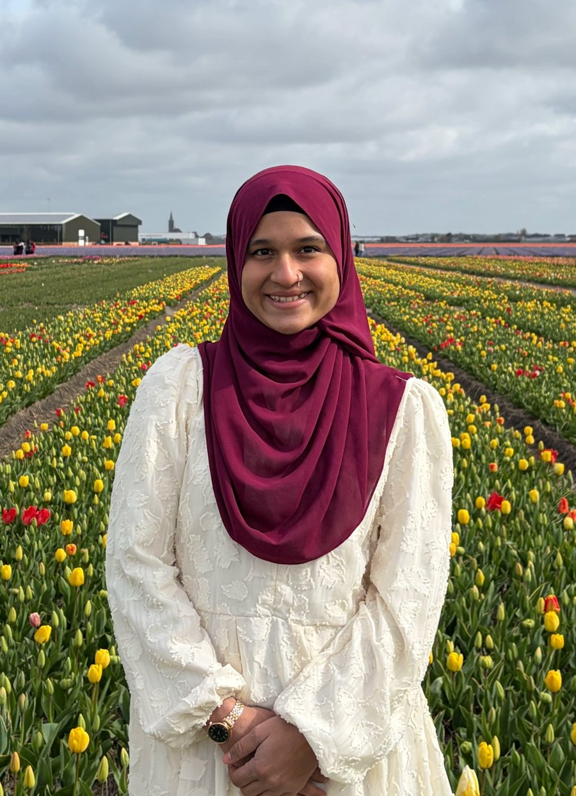
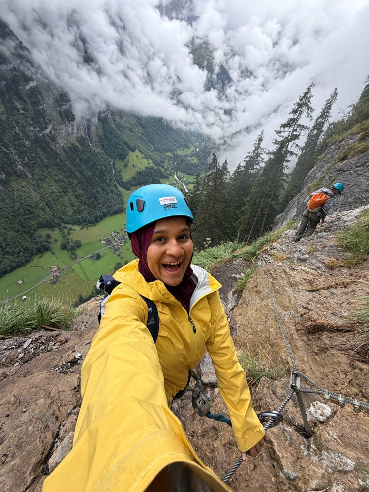
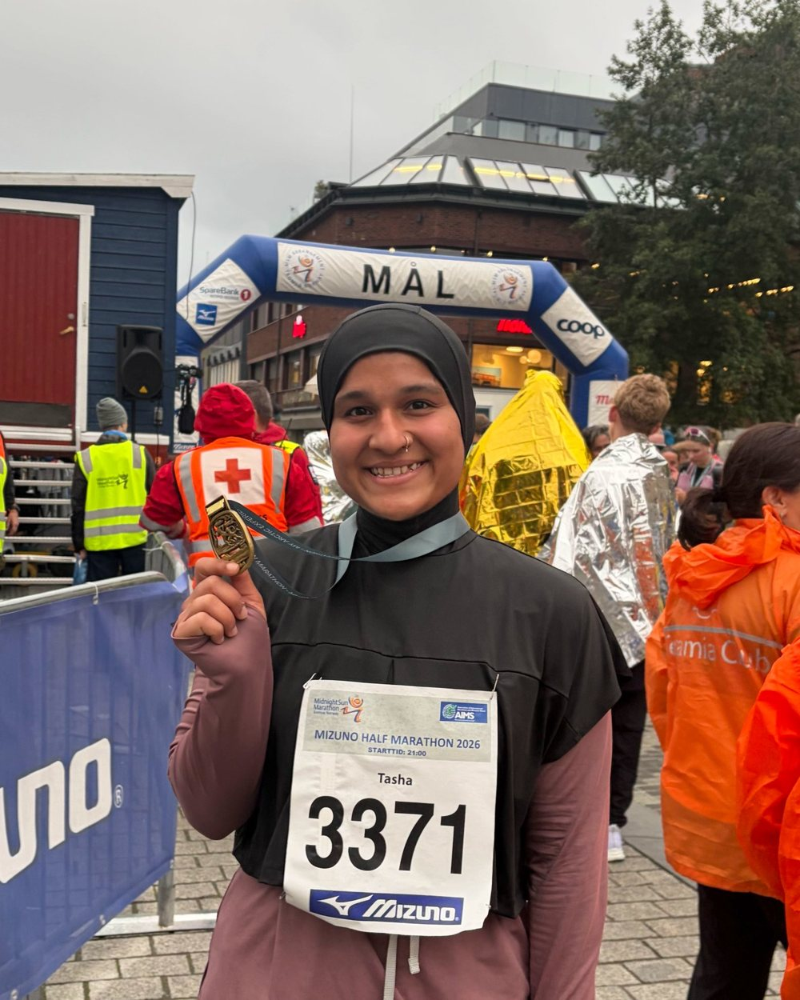

AI chatbot · Team of 4
Kopi & Keys
Helping HDB resale buyers get answers they can trust, in plain English.
Product, Data & AI · SMU Information Systems '27
I've loved solving problems and being around people since I was a kid. As I grew up, that led me to product: a world built on empathy, on understanding customers, and on finding new ways to solve their pain points.
Open to Product, Business Analyst and Data & AI roles from July 2027

AI chatbot · Team of 4
Helping HDB resale buyers get answers they can trust, in plain English.
FinTech · AWS · Team of 6
Noticing when criminals change tactics, before detection quietly stops working.
Final Year Project · Industry client
Designing an AI-guided client onboarding experience with a financial services partner, in a team of six. The details are confidential for now, but I'm happy to share what I learned about working with a real client.
Product management · Team of 4
Getting to what matters before you match.
User Acceptance Testing Analyst Intern
Dec 2025 – Mar 2026
Made sure a new wealth management platform worked for the people using it before it went live.
Product Management & Innovation Intern
May – Aug 2025
Helped bring hospitality tech products to market, working across product, sales and marketing.
Inbound Sales and Customer Success Intern
Jan – Sep 2024
Supported customers through their journey, from their first call to helping them land a job.
I love pushing myself out of my comfort zone, whether in my work or through physical challenges like running or trying my first via ferrata.
In my free time, you'll always find me with a coffee in hand (or a Kopi Peng Siew Dai, my favourite order here in Singapore), either watching a movie, because I love breaking down films and acting, or getting back into reading.
I also love teaching, helping young ones grow in confidence and realise their potential.
Currently reading: Psycho-Cybernetics by Maxwell Maltz


I'd love to hear about roles, projects, or just chat about product and tech.